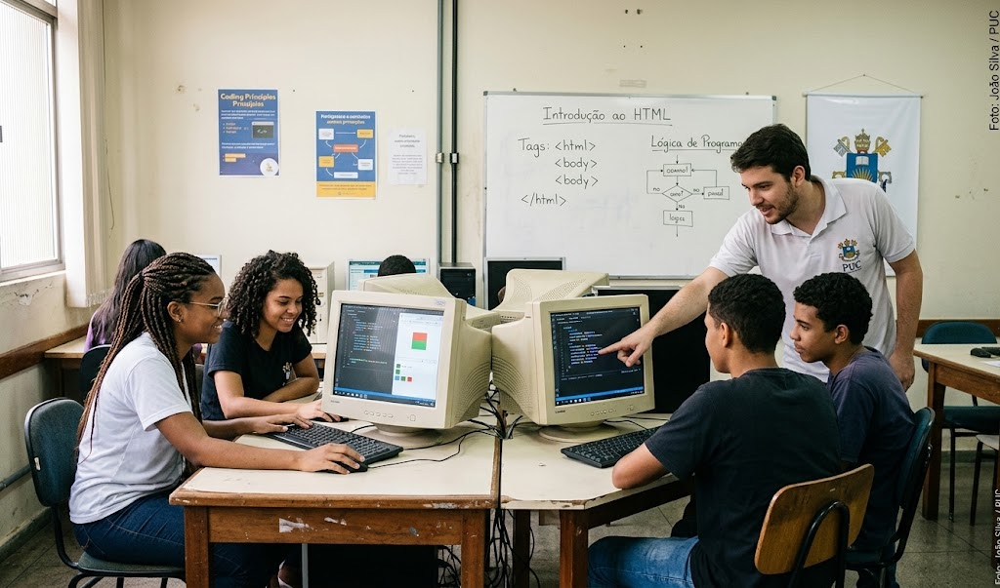
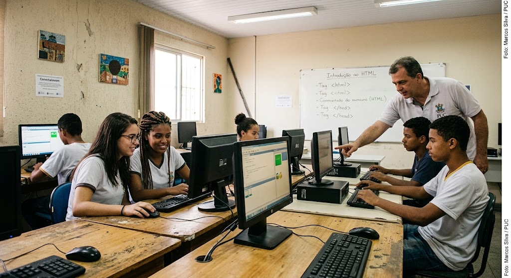
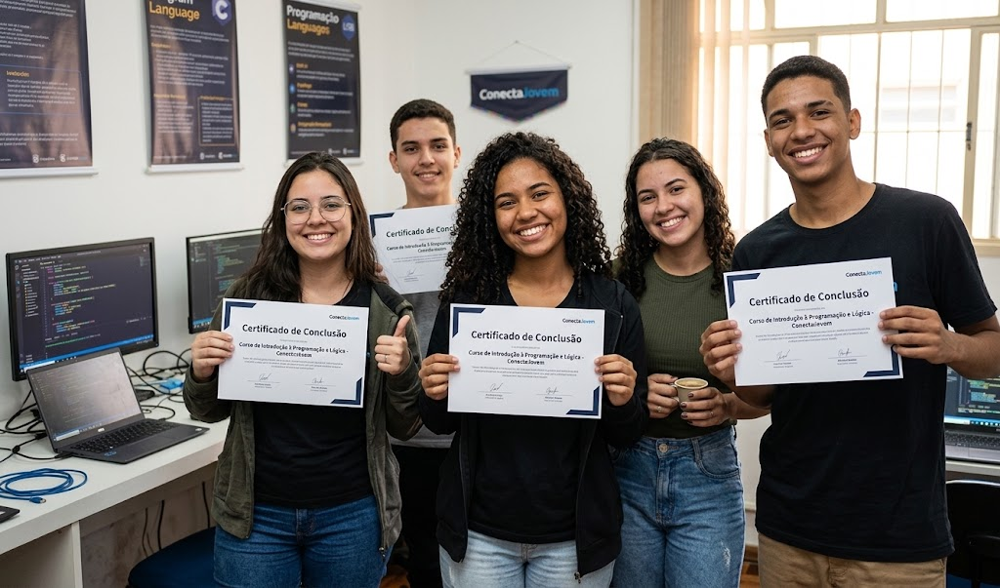
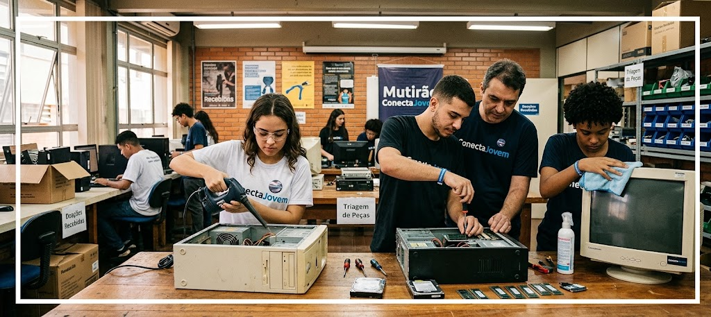

Capacitamos jovens de comunidades carentes com oficinas gratuitas de informática, lógica e programação para o mercado do futuro.
O Projeto Conecta Jovem surgiu com a missão de diminuir a barreira digital que afeta estudantes de baixa renda. Acreditamos que o acesso à educação tecnológica é a principal ferramenta para gerar oportunidades reais.
Contamos com um laboratório equipado, monitores voluntários dedicados e uma grade curricular focada tanto na base teórica quanto na prática de mercado.

Acompanhe alguns registros das nossas turmas e reuniões de estudo sobre computadores:



Ajude a manter nossa estrutura e lanches para os nossos estudantes em dias de aula.
pix@conectajovem.orgRecebemos peças antigas, notebooks e periféricos conservados.
Compartilhe seu conhecimento técnico dando aulas ou ajudando a organização como puder.